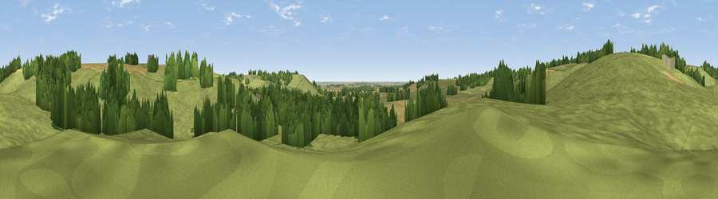

Dewy Hill
#38169 in England · top 67% of its area beats it · near Old BolingbrokeWhere it is
The exact computed spot (TF 34849 65487). Click the marker for map links.
The view, rendered

A 360° render of this exact spot computed from the terrain model, tree cover and land cover — summer colours, afternoon light, calibrated against photographs of famous viewpoints. Real trees, hedges and buildings will differ in detail.
The panorama
Grey silhouette: terrain skyline in each direction (720 bearings, Earth curvature and refraction included). Dashed green: skyline with trees (+15 m) and buildings (+8 m) as obstacles. Blue strip: how far the ground is visible on each bearing.
Where the view opens
Wedge length = distance to the farthest visible ground on that bearing (vegetation-aware). Rings at 10, 25 and 50 km.
What fills the view
72% grassland · 17% woodland · 11% cropland
Angular shares of the visible panorama (visual magnitude), not map area. Landscape diversity 0.34 (0–1 Shannon).
Key numbers
More beautiful places nearby
The staircase of upgrades: each row has a higher view potential than everything closer. Driving times are estimates from straight-line distance, calibrated against real road routing — check an actual route before setting out.
| Place | Direction | Drive | Score |
|---|---|---|---|
| Grantam Point | SSE · 2 km | ~5 min | 58.0 |
| Viewpoint near East Keal | ESE · 3 km | ~7 min | 66.0 |
| Viewpoint near Claxby | NW · 38 km | ~57 min | 71.5 |
| Broombriggs Hill | WSW · 98 km | ~122 min | 74.4 |
| Viewpoint near Woodhouse Eaves | WSW · 98 km | ~122 min | 77.7 |
| Viewpoint near Speeton | N · 111 km | ~136 min | 80.0 |
| Olivers Mount | NNW · 125 km | ~149 min | 80.3 |
| Viewpoint near Ravenscar | NNW · 140 km | ~164 min | 82.7 |
53.16942, 0.01587 · source: osm peak · position refined by local search. Computed location — check access rights before visiting.